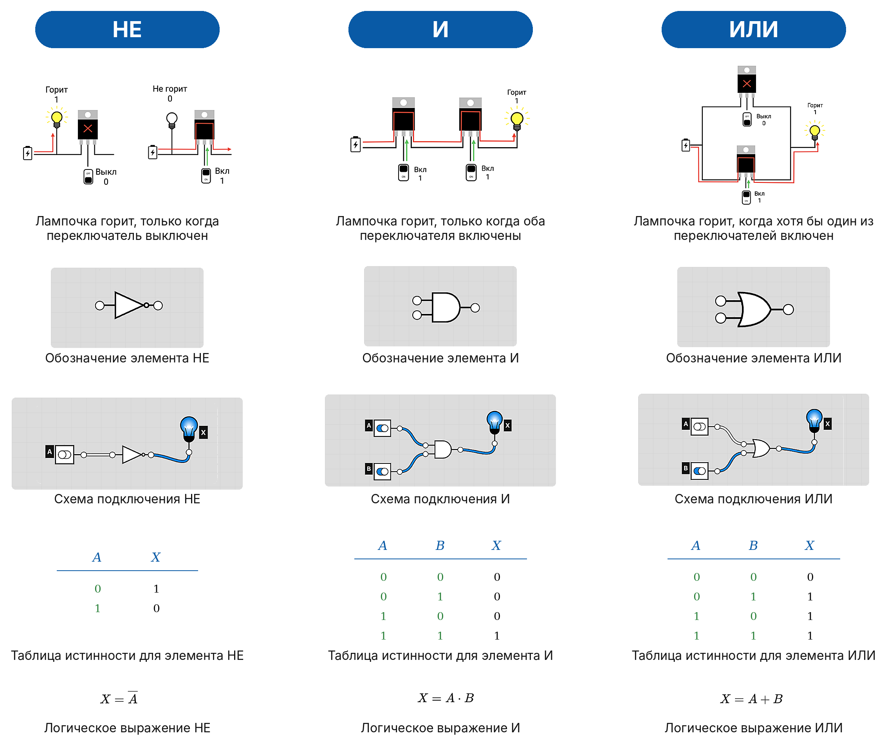
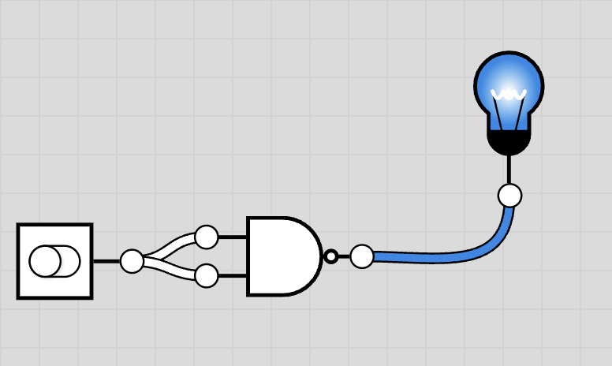
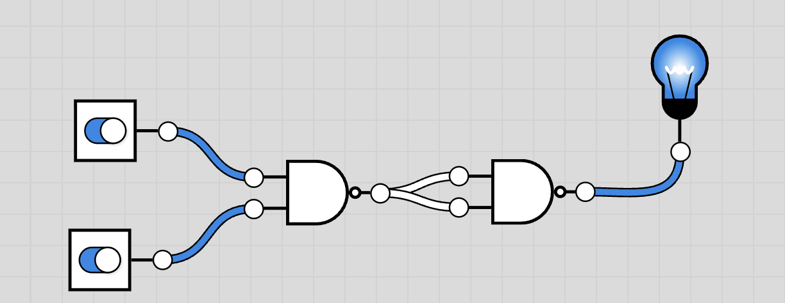
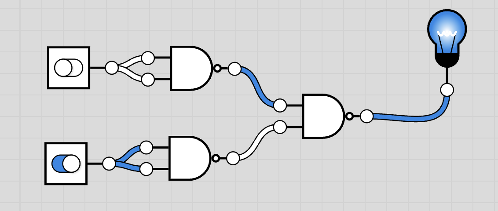
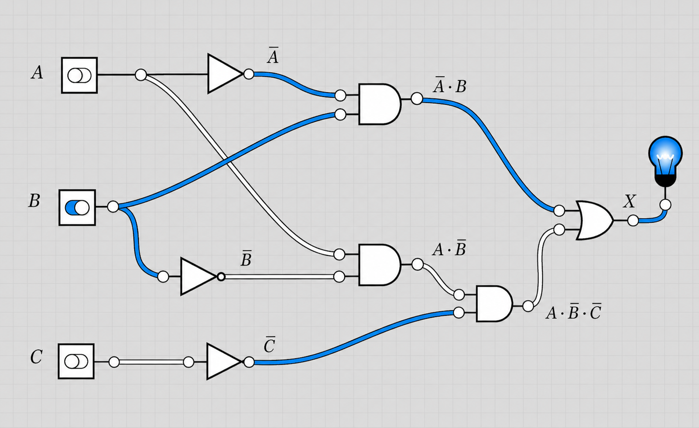
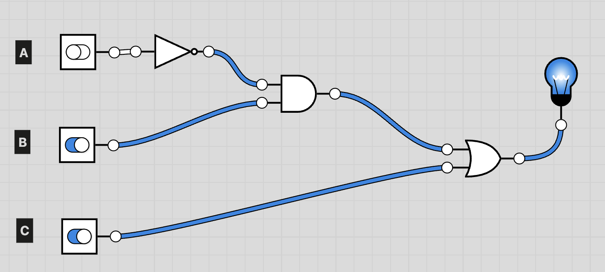
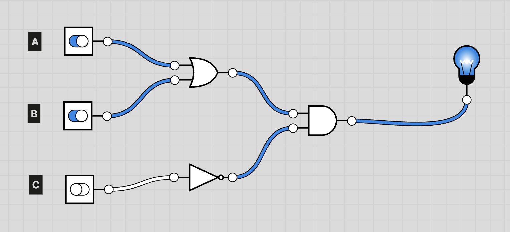
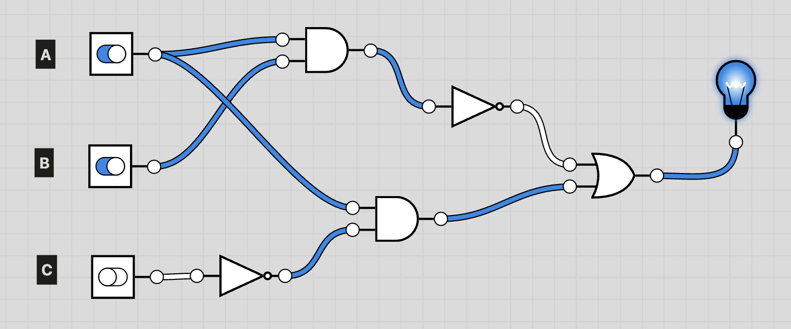
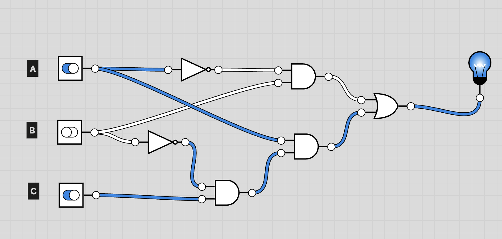

Логические элементы и схемы

В середине XIX века английский математик Джордж Буль создал алгебру логики. Она дала математический язык для описания логических высказываний и операций и стала основой современной цифровой логики.
В начале XX века американский математик и инженер Клод Шеннон показал, что алгебру Буля можно применять к электрическим схемам. Так логические формулы стали основой для проектирования релейных, а затем и полупроводниковых схем.
После изобретения транзистора в 1947 году стало возможным строить компактные и эффективные логические элементы. В 1960-1970-х годах интегральные схемы объединили множество транзисторов на одном кристалле, что привело к появлению микропроцессоров.

Транзистор — это электронный компонент, который работает как управляемый переключатель: он может пропускать ток или блокировать его.
Логические элементы строят из транзисторов, которые управляют потоком тока в схеме. В одном из распространённых типов, полевом транзисторе, управляющий вывод называется затвором. Он регулирует ток между двумя другими выводами — истоком и стоком. Когда на затвор подаётся напряжение, транзистор открывает путь току и помогает схеме переключать состояния.
Из большого числа таких транзисторов и собирают логические элементы, которые выполняют логические операции в компьютере.
Logic.ly

В этой главе мы будем использовать онлайн-платформу Logic.ly для иллюстраций и построения электронных схем. В ней вы сможете сами строить такие схемы.
В Logic.ly переключатели отвечают за входные данные, а лампочка — за выход: включено — это true, выключено — false. В логических схемах для обозначения true и false используют \(1\) и \(0\).
Основные логические элементы
Логический элемент — это схема с одним или несколькими входами и одним выходом, которая выполняет логическую операцию.
Любую логическую функцию можно представить с помощью элементов «НЕ», «И» и «ИЛИ». Такой набор элементов называется полным. Далее разберём эти логические элементы.

Производные логические элементы
Производные элементы собирают из базовых элементов НЕ, И и ИЛИ. Они выполняют более сложные правила, но по-прежнему имеют те же входы \(A\), \(B\) и один выход \(X\).
Обратите внимание: NAND и NOR отличаются от AND и OR маленьким пустым кружком на выходе. Этот кружок означает отрицание, то есть НЕ.
NAND (НЕ-И)
NAND — это элемент И, после которого стоит НЕ. Он выдаёт \(0\) только в одном случае: когда оба входа равны \(1\). Во всех остальных случаях выход равен \(1\).
Алгебраическая запись: \(X = \overline{A \cdot B}\).


| \(A\) | \(B\) | \(X\) |
|---|---|---|
| 0 | 0 | 1 |
| 0 | 1 | 1 |
| 1 | 0 | 1 |
| 1 | 1 | 0 |
Таблица истинности для NAND
NOR (НЕ-ИЛИ)
NOR — это элемент ИЛИ, после которого стоит НЕ. Он выдаёт \(1\) только тогда, когда оба входа равны \(0\). Если хотя бы один вход равен \(1\), выход равен \(0\).
Алгебраическая запись: \(X = \overline{A + B}\).


| \(A\) | \(B\) | \(X\) |
|---|---|---|
| 0 | 0 | 1 |
| 0 | 1 | 0 |
| 1 | 0 | 0 |
| 1 | 1 | 0 |
Таблица истинности для NOR
Элементы NAND и NOR особенно важны в схемотехнике. Используя только NAND или только NOR, можно выразить операции НЕ, И и ИЛИ, а значит, и собрать любую логическую схему.
Схемы в задачах ниже стройте в Logic.ly.
Задачи для тренировки: NAND в схемотехнике
Используя только элементы NAND, постройте схемы для функций.
a)
Ответ

b)
Ответ

c)
Ответ

XOR (исключающее ИЛИ)
XOR выдаёт \(1\), если входы разные. Если оба входа одинаковые — оба \(0\) или оба \(1\), — выход равен \(0\).
Алгебраическая запись: \(X = A \oplus B\).


| \(A\) | \(B\) | \(X\) |
|---|---|---|
| 0 | 0 | 0 |
| 0 | 1 | 1 |
| 1 | 0 | 1 |
| 1 | 1 | 0 |
Таблица истинности для XOR
Сведём в одну таблицу все пройденные элементы.
| \(A\) | \(B\) | \(\overline A\) | \(A \cdot B\) | \(A + B\) | \(\overline{A \cdot B}\) | \(\overline{A + B}\) | \(A \oplus B\) |
|---|---|---|---|---|---|---|---|
| 0 | 0 | 1 | 0 | 0 | 1 | 1 | 0 |
| 0 | 1 | 1 | 0 | 1 | 1 | 0 | 1 |
| 1 | 0 | 0 | 0 | 1 | 1 | 0 | 1 |
| 1 | 1 | 0 | 1 | 1 | 0 | 0 | 0 |
Общая таблица истинности для пройденных логических элементов
Построение логических схем
Если логическое выражение уже известно, схему удобно строить с конца: от последней операции к входным переменным.
Рассмотрим выражение
Последняя операция здесь — ИЛИ, поэтому на выходе схемы стоит элемент ИЛИ. Дальше разбираем каждую ветку отдельно. Первая ветка вычисляет \(\overline A \cdot B\): сначала из сигнала \(A\) получают \(\overline A\), а затем соединяют \(\overline A\) и \(B\) элементом И. Вторая ветка вычисляет \(A \cdot \overline B \cdot \overline C\): сигналы \(B\) и \(C\) сначала проходят через элементы НЕ, после чего вместе с \(A\) подаются на элементы И.
Так постепенно вся схема собирается из более простых частей, пока на входах не останутся только исходные сигналы \(A\), \(B\) и \(C\). На рисунке показана уже готовая схема для этого выражения.

Задачи для тренировки: построение логических схем
Схемы в задачах ниже стройте в Logic.ly.
1. Постройте схему для выражения
Ответ

2. Постройте схему для выражения
Ответ

3. Постройте схему для выражения
Ответ

4. Постройте схему для выражения
Ответ

Прикладные задачи.
5. Соревнования по поднятию тяжестей судит бригада из трёх человек, один из них старший. Лампочка «Вес взят» должна зажигаться, если проголосовали по крайней мере два судьи, причём один из них — старший. Предложите логическую схему, которая решала бы эту задачу.
Ответ
Пусть \(A\) — голос старшего судьи, \(B\) и \(C\) — голоса двух остальных судей, \(1\) означает «вес взят».
6. В двухэтажном доме есть два выключателя, которые управляют освещением лестницы: один на первом этаже, второй на втором. После каждого нажатия состояние выключателя меняется. Если один человек входит снизу, включает свет первым выключателем, поднимается наверх и выключает свет вторым, схема должна работать правильно и для следующего человека, даже когда положения выключателей уже изменились. Предложите логическую схему, которая решала бы эту задачу.
Ответ
Пусть \(A\) и \(B\) — состояния двух выключателей.
7. В самолёте есть три бака с горючим. Датчик в каждом баке выдаёт \(0\), если горючего достаточно, и \(1\), если горючее закончилось. Лампочка «Тревога» должна загораться, когда горючее закончилось хотя бы в двух баках. Предложите логическую схему, которая решала бы эту задачу.
Ответ
Пусть \(A\), \(B\), \(C\) — сигналы датчиков трёх баков, \(1\) означает «бак пуст».
8. В парламенте выбирают спикера из трёх кандидатов. Каждый парламентарий должен нажать одну и только одну из трёх кнопок. Если нажата ровно одна кнопка, должна загореться зелёная лампочка. Предложите логическую схему, которая решала бы эту задачу.
Ответ
Пусть \(A\), \(B\), \(C\) — сигналы от трёх кнопок, \(1\) означает «кнопка нажата».
По материалам:
1. Paul Baumgarten, Ioana Ganea, Carl Turland. Computer Science for the IB Diploma Programme. 2025. Hachette Learning.
2. К. Ю. Поляков, Е. А. Еремин. Учебник информатики для 10–11 классов. Углубленный уровень.